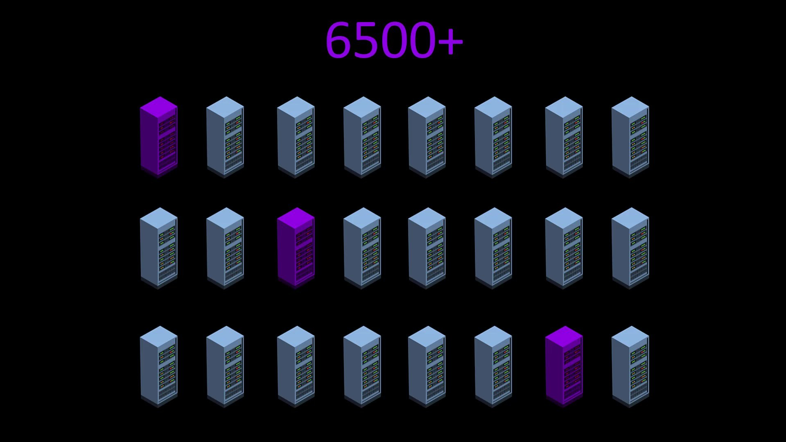
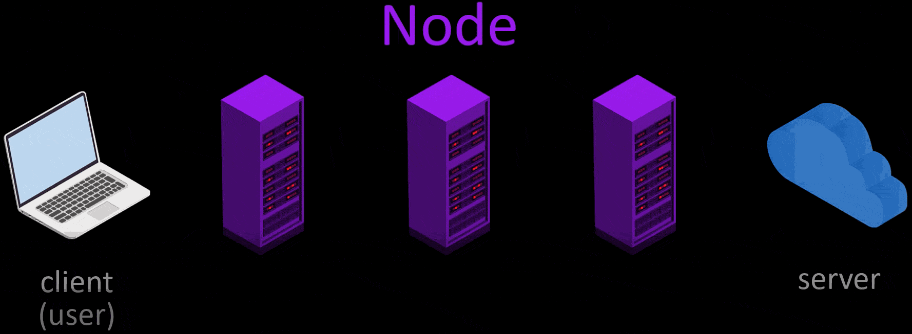
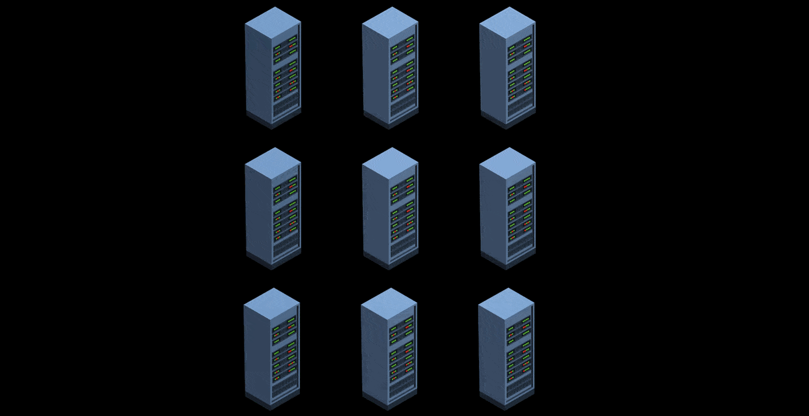

How Does Tor Work ?
Tor is basically based on the obfuscation principle. In order to better understand the working structure and to see what kind of system we actually rely on, let's start by talking about the general working structure.
For the process of anonymizing the user, 3 of approximately 6500 volunteer servers are selected randomly.

These selected servers are called nodes. While connected to the Tor network, data packets are encrypted and transmitted through these three nodes to the target server. The server's response packet is encrypted in the same way and transmitted to the user, over three nodes. In this way, all traffic between the website and you is anonymized.
Quite generally, this is the way the Tor network works. However, let's continue to explain as it will make us more secure to know in a little more detail how our anonymity is provided through this structure.In example scenario, let's visit wikipedia.org via Tor and explain all the process steps that take place during our visit one by one.
- Firstly, for use the Tor network, i opened Tor Browser, and typed the address i want to go to.
- Tor first selects 3 random nodes from around 6500 active Tor servers. Tor servers work on a voluntary basis and in the selection of voluntary servers, servers that can provide high bandwidth and remain open for a long time are preferred. In other words, the number of these servers, which are currently around 6500, may change over time. And the list of all servers is publicly published.
- After the node points are selected randomly, my request packet is encrypted in 3 layers. The request package here is the package that states i want to go to "wikipedia.org".
- The first of the encrypted layers is decrypt by the key in the starting node, and the decrypted layer only gives the information of the next node. Thus, the first node knows to which node it will forward the request packet.
- Likewise, the middle node decrypt on the second layer with its own key. In this way, it learns which node to redirect the packet to and redirects it to.
- The last encrypted layer in the packet reaching the exit node is also decrypted and which server this packet should be transmitted to is learned by the last node and the packet is transmitted to the relevant server.
- In response to the packet reaching the server, the response packet of the server follows the same route and reaches the user, namely the client.
- In addition, in order to ensure the anonymity of users in long-term use, the selected nodes are changed randomly every 10 minutes by default, except for the first node. In addition, users have the opportunity to manually change the nodes randomly whenever they want.

This much information is enough for now, as going into much deeper and technical issues will not make you safer on the Tor network. This is how the Tor network generally works. We will be talking about this working structure in more detail in the following sections. If you are curious about the technical and scientific details behind the Tor network, there are many articles on this subject, you can easily access this detailed information on the Tor official website or if you do a short internet search. However, you can be sure that in this course I will talk about everything you need to know about anonymity and privacy.